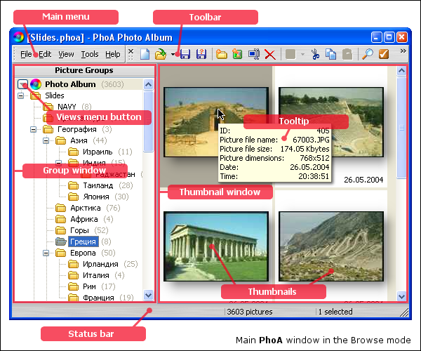

As it was mentioned above, the browse mode is intended for photo album creation. This mode is just one the program starts in.
The main program window looks similar to standard Windows® Explorer: the left pane displays folder-groups tree hierarchy while the right one gives us a list of thumbnails for the group selected in the left pane.
Right to the left of the root tree node - the photo album node you can see a drop-down menu button allowing you to display menu with photo album view commands as well as for switching between views and photo album groups.
It is also possible to use the Space key when the root node is highlighted to display that menu.
{[%hh_seealso_en]}
Browse mode menu commands
Working in the browse mode
Working with views
{[%hh_ftr_en]}